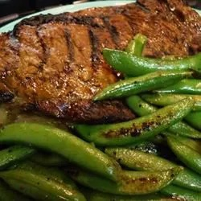

Whiskey-Marinated Steak
Whisky and steak! What could be better?

Ingredients:
- ⅔ cup water
- ½ cup whiskey
- ½ cup pineapple juice
- ½ cup brown sugar
- ½ cup diced onion
- ⅓ cup teriyaki sauce
- ⅓ cup soy sauce
- ¼ cup liquid smoke
- 1 teaspoon minced garlic
- 4 (8 ounce) rib-eye steaks
Directions
- Whisk together the water, whiskey, pineapple juice, brown sugar, diced onion, teriyaki sauce, soy sauce,
liquid smoke, and minced garlic in a bowl.
- Lie the steaks in the bottom of a baking dish. Pour the marinade over the steaks; refrigerate overnight
- Preheat an outdoor grill for high heat, and lightly oil grate.
- Grill steaks to desired doneness, 3 to 5 minutes per side for medium-rare. Allow steaks to rest for 5 to 10
minutes before serving.